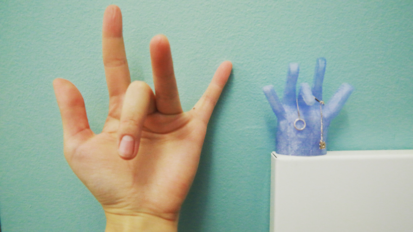
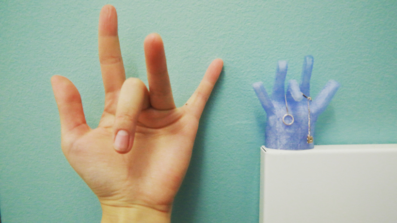

During the winter break of my sophomore year, I was antsy to get making again, so I created this infinity mirror, which doubled as a music visualizer. I would input a MIDI file and it would decompose it into hats, snares, and beats. Then, binning those sounds by their frequencies, I mapped them to different stunning LED light patterns.
It was a thrilling independent first step at electronics and making.


When I went to Peru in the summer of 2017, I thought my only job was to teach design engineering: to lecture about circuitos and voltaje, 3D CAD principles, and beginner programming. I was wrong, which was a recurrent, humbling theme throughout my time there. I learned so much, particularly as I helped prototype a mouth-operated computer mouse for a girl in need.
In the fall of 2016, I recreated this prototype, improving upon it with an Arduino Leonardo, a Gimbal joystick, lasercut and 3D printed housings, a button, and some clever code. The mouse can be moved solely head action left, right, up, and down. Depending on the duration of the click, the computer registers a left click or a right click.
This project taught me that design doesn't really matter, not unless it's for someone, and this was something I didn't realize when I used to say, "I'm studying human-centered design courses at Cal!"
In the fall of 2016, I recreated this prototype, improving upon it with an Arduino Leonardo, a Gimbal joystick, lasercut and 3D printed housings, a button, and some clever code. The mouse can be moved solely head action left, right, up, and down. Depending on the duration of the click, the computer registers a left click or a right click.
This project taught me that design doesn't really matter, not unless it's for someone, and this was something I didn't realize when I used to say, "I'm studying human-centered design courses at Cal!"
In the fall of 2016, I took Tangible User Interfaces, a graduate course that explored the physical computing aspect and theory of HCI. It was a class truly made me a maker, as it pushed me back into the makerspace to complete our final project, which was a synesthetic musical sandbox. The image below was one of my earlier projects, a cute but deconstructed music box that would bleep "Part of Your World" as it faded a red-blue gradient.
 
